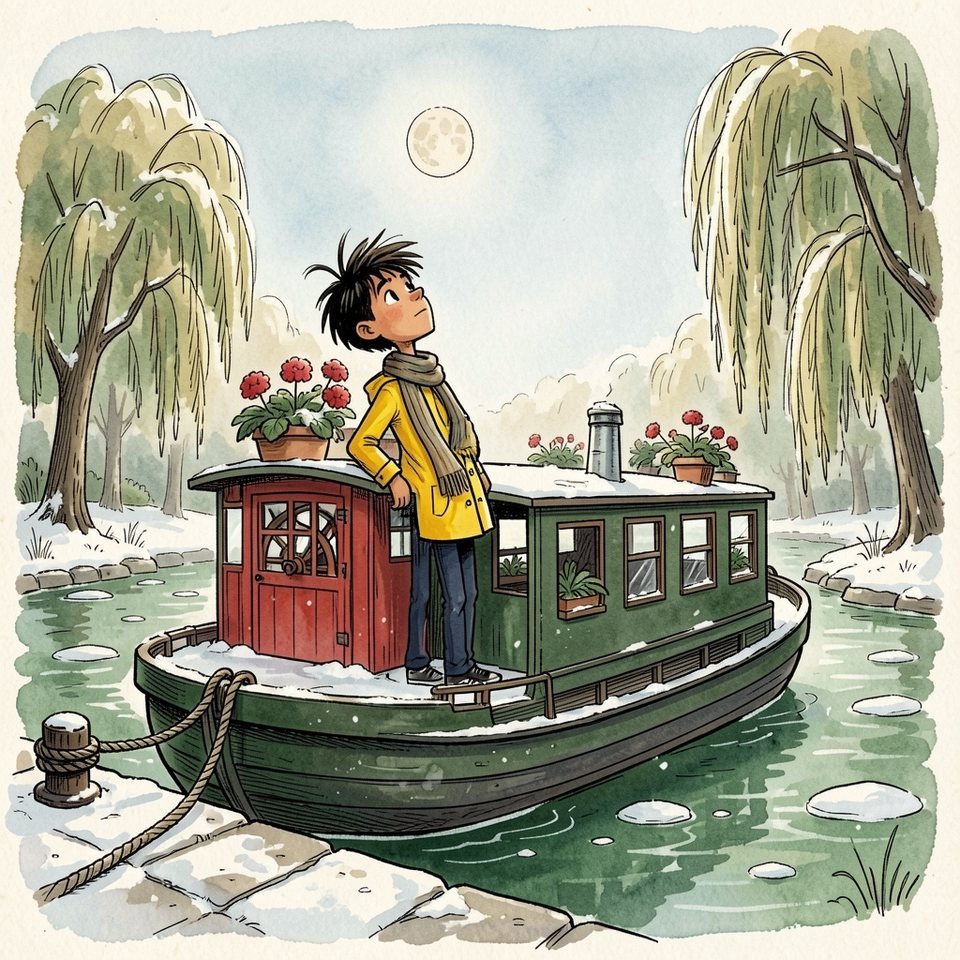

Titistoire › Les Comètes (6-8 ans)
Par cœur
Une année à Virevent, l'histoire du mois de janvier : Jeanne, Gaspard, Suzie et Marin.

▶ Écouter et regarder l'histoire
Gratuit, sans inscription : la voix lit, le texte suit mot à mot, les images tournent comme dans un album.
Le texte de l'histoire
En janvier, la Flânette charriait de petites assiettes de glace, et le quai des Saules craquait sous les semelles. Marin sortit sur le pont de L'Hirondelle, leva le nez et lut le ciel.
Un halo autour de la lune pâle : neige avant midi. La fumée du Fournil qui se couchait vers l'écluse : vent du nord. Il lisait cela sans y penser.
Il lisait l'eau, aussi : un remous disait un rocher, une ride un banc de sable. Et les nœuds : devant une amarre, il devinait qui l'avait tournée, et s'il était pressé.
Une seule chose lui résistait : les lignes noires des livres. Dix-sept écoles. Dix-sept fois la première page, la maîtresse qui sourit, a, b, c… et la péniche qui repart.
Il connaissait tous les débuts. Jamais la suite. Dans son cartable, le livre de lecture pesait le poids d'une ancre. Il le prit quand même, et descendit la passerelle.
Chaque vendredi, un élève montait sur l'estrade lire à voix haute un chapitre de « L'Île aux Trois Vents ». Les autres suivaient dans leur livre. Marin, lui, suivait Suzie.
C'était sa voisine de pupitre. Quand elle tournait la page, il tournait la sienne, ni avant, ni après. De loin, cela faisait un lecteur très convenable.
Ce lundi-là, Monsieur Grison promena sa craie au-dessus des têtes. « Vendredi, le chapitre sept. La tempête ! Il nous faut une voix qui connaisse les bateaux. Marin. »
Marin se leva. Son pied gauche alla tout seul se caler derrière son mollet droit. « Ça m'est égal. » Sur une jambe, il pouvait tenir longtemps. Jusqu'à vendredi, c'était moins sûr.
Le chapitre sept : quatre pages de lignes noires, emmêlées comme un cordage après la tempête, sans un bout par où les prendre. À côté de lui, Suzie tourna la page. Il tourna la sienne.
Le mercredi soir, la lanterne rouge brûlait dans le saule. Dans la cabane, il faisait un froid à fendre les crayons. Marin posa le livre sur les genoux de Jeanne, ouvert au chapitre sept.
« Lis-le-moi. » « Moi ? Pourquoi ? » Il chercha une raison exacte, et en trouva une qui l'était presque. « Tu fais mieux les voix que le maître. » Jeanne rosit jusqu'aux taches de rousseur.
Elle lut. Elle fit le vent, le capitaine, et le perroquet du capitaine, d'une voix de porte qui grince : « Tous aux abris, nom d'une sardine ! » Marin écoutait, les yeux fermés.
C'est ainsi qu'il avait appris la rivière. Rien n'y était écrit : son père récitait les écluses dans l'ordre, et Marin les gardait. Un chapitre, ce n'était jamais que quatre pages d'écluses.
« Encore », demanda-t-il. Puis : « Encore. » À la troisième fois, Jeanne n'avait plus de voix, et lui les avait toutes. Il savait même où tourner la page : juste après le mot « tonnerre ».
Vendredi, il neigeait à petits flocons pressés. Marin monta sur l'estrade, ouvrit le livre et posa les yeux dessus, bien au milieu, là où un lecteur les aurait posés.
« Chapitre sept. La tempête. » Sa voix partit toute seule, comme une barque dans le courant. Les lignes noires passaient sous ses yeux sans qu'il en dérange une seule.
Quand vint le perroquet, il prit la voix de porte qui grince. La classe éclata de rire. Jeanne remuait les lèvres en même temps que lui, très fière sans savoir de quoi.
« … et le tonnerre roula sur la mer. » Tonnerre : il tourna la page. Il alla sans une faute jusqu'au dernier mot. Monsieur Grison applaudit le premier.
Tout le monde applaudit. Presque. Gaspard regardait le livre de Marin, puis le sien, et fronçait le nez comme devant une addition qui ne tombe pas juste.
À la récréation, Gaspard le rejoignit sous le cerisier. « Tu as tourné la page trop tôt. D'une phrase. Il restait un deuxième coup de tonnerre, tout en bas. J'ai compté. »
Marin regarda la neige tomber. « J'avais de l'avance. » « On ne peut pas avoir de l'avance sur une page. » « Sur un bateau, si. » Gaspard ouvrit la bouche, et la referma.
Cling-cling : Monsieur Grison traversait la cour, les oreilles roses de plaisir. « Marin ! Une lecture pareille, il faut que les petits en profitent. Tu iras lire chez eux tous les mardis, à la récréation. »
Tous les mardis. Marin sentit le sol tanguer, lui qui ne tanguait jamais. « Et tu choisiras toi-même les histoires ! » Jeanne ne pourrait pas lui lire trois fois tous les livres du monde.
Le mardi suivant, il poussa la porte de la petite classe avec un plan : raconter la tempête en tenant n'importe quel livre ouvert. Les petits n'y verraient que du feu.
Ils étaient une douzaine, assis en rond près du poêle, sur des chaises de poupée. Marin plia ses grandes jambes. Ses genoux lui arrivèrent sous le menton.
Il n'eut pas le temps d'ouvrir la bouche. Une toute petite fille en bottes orange lui planta un livre dans les mains : Mimosa, la voisine de Suzie.
« Celui-là. C'est mon préféré. » Sur la couverture, une poule regardait au loin. Cette histoire-là, personne ne la lui avait lue trois fois. Personne ne la lui avait lue du tout.
« Tu ne préfères pas une tempête ? Avec un perroquet ? » « Non. » « Pourquoi ? » demanda-t-il, pris de court. Mimosa le regarda de travers : d'habitude, c'était elle qui posait cette question.
Il ouvrit le livre. Les lettres étaient grosses, au moins, et il les connaissait toutes : il les avait apprises dix-sept fois. « La… pou… le. » Il respira. « La poule. »
Il attendit les rires. Il n'en vint aucun. Les petits écoutaient, bouche entrouverte, très sérieux. Ils n'avaient jamais vu personne lire autrement : chez eux, c'était ainsi que l'on faisait.
Mimosa grimpa sur le barreau de sa chaise et posa le bout de son doigt sous le mot suivant. Un doigt taché de confiture, qui avançait quand il avançait, et l'attendait quand il cherchait.
« Vou… lait… voir… la mer. » « Pourquoi ? » « Parce qu'elle ne l'a jamais vue. » « Pourquoi ? » « Parce que c'est loin. » Cela, Marin le savait sans lire : il y était allé.
La cloche sonna avant la fin de la troisième page. « Tu lis bien, décréta Mimosa. Enfin, je crois. » Elle garda son doigt à l'endroit exact où ils s'étaient arrêtés. « Tu reviens demain ? »
Il revint le lendemain, en cachette. Puis le jeudi. À la récréation, il longeait le mur, poussait la petite porte et repliait ses jambes sur la chaise de poupée.
Mimosa l'attendait, le livre ouvert, le doigt prêt. La poule traversa une forêt, puis un pont. Certains mots, à présent, il les reconnaissait de loin, comme on reconnaît un clocher.
« Mer », par exemple : trois lettres, une vague au début. « Pourquoi tu souris ? » « Je ne souris pas. » « Si. Là. » Elle lui toucha le coin de la bouche.
Le vendredi, la poule arriva enfin au bord de l'eau. Il restait une page. Marin n'avait raconté à personne où il passait ses récréations ; il se figurait que personne ne l'avait cherché.
« La poule… trem… pa… une patte… » Derrière lui, la porte grinça. Le doigt de Mimosa s'arrêta. Marin n'eut pas besoin de se retourner : il connaissait ce pas.
Gaspard se tenait sur le seuil, de la neige sur les épaules. Il regarda la chaise de poupée, les genoux sous le menton, le gros livre, la poule, le doigt de Mimosa.
Marin voulut se mettre sur une jambe ; assis si bas, c'était impossible. « Ça m'est… » Le mot suivant ne vint pas. Il le chercha, comme il cherchait les autres depuis mardi.
Alors il lâcha la vraie phrase. « Dix-sept écoles. On recommençait toujours au début. Vendredi, je n'ai pas lu. J'ai récité. » Sa voix était toute petite, pour un garçon si grand.
Gaspard ne répondit rien. Il ne sortit pas son carnet. Il alla chercher une autre chaise de poupée, la posa contre celle de Marin, et s'y assit.
« Toi aussi, tu viens apprendre ? » s'informa Mimosa. « Je viens compter. Il reste une page. » Elle remit son doigt à sa place, et Marin reprit : « … une patte… dans… la mer. »
L'après-midi, Monsieur Grison ouvrit « L'Île aux Trois Vents ». « Chapitre huit. Suzie, c'est ton tour. » Suzie se levait déjà quand, à côté d'elle, un long bras jaune monta vers le plafond.
« Monsieur. Je voudrais relire le chapitre sept. » « Mais tu l'as lu à merveille ! » « Non. » Marin avait les deux pieds par terre. « Je le savais par cœur. Je ne l'ai pas lu. »
Il y eut un remous. Jeanne se retourna tout d'une pièce : « Mais alors, mes trois fois… » Elle n'acheva pas. Gaspard venait de lui marcher sur le pied, avec beaucoup de précision.
Le maître considéra Marin un long moment, la craie immobile. Il ne posa aucune question. Suzie fit oui de la tête, deux fois, et se rassit. « Alors monte, Marin. Nous avons le temps. »
Il monta sur l'estrade. Le livre lui parut moins lourd que lundi. Il l'ouvrit, chercha le premier mot, et posa son doigt dessous, comme on le lui avait appris dans une autre classe.
« La… tem… pête. » Il allait au pas, cette fois. Les lignes noires ne défilaient plus : il les prenait une à une, par le bout, et tirait doucement, comme on démêle un cordage.
Par endroits, sa mémoire voulait courir devant. Il la retenait. Quand vint le perroquet, il le lut de sa voix à lui, et la classe trouva cela encore plus drôle.
Au fond, un banc grinça d'impatience. Gaspard se retourna, et le banc se tint tranquille. Jeanne remuait les lèvres ; puis elle cessa, et se contenta d'écouter.
La cloche sonna quatre heures. Il restait une demi-page. Les cartables remuèrent. Monsieur Grison leva sa craie. « Personne ne bouge. À Virevent, on a toujours cinq minutes. »
« … et le tonnerre… roula… sur la mer. » Tonnerre. La main de Marin partit vers le coin de la page. Il la reposa. Tout en bas, il restait une phrase, et il la lut.
Le soir, la neige avait cessé. Madame Bogue alluma les réverbères du quai, et leurs ronds jaunes tremblèrent sur la Flânette. Marin s'assit sur le pont de L'Hirondelle, le livre sur les genoux.
Dans la timonerie, sa mère chantait, son père graissait une poulie. Il ne leur demanda rien. Il ouvrit le livre au chapitre huit, que personne ne lui avait jamais lu.
« Cha… pitre… huit. » Sa voix faisait de la buée. La chanson s'arrêta. Une grande main décrocha la lampe de la timonerie et vint la suspendre au-dessus de lui, sans un mot.
Il n'allait pas vite. En bas de la page, il s'arrêta, et vérifia qu'il ne restait rien : pas un mot, pas un coup de tonnerre. Alors Marin tourna la page.